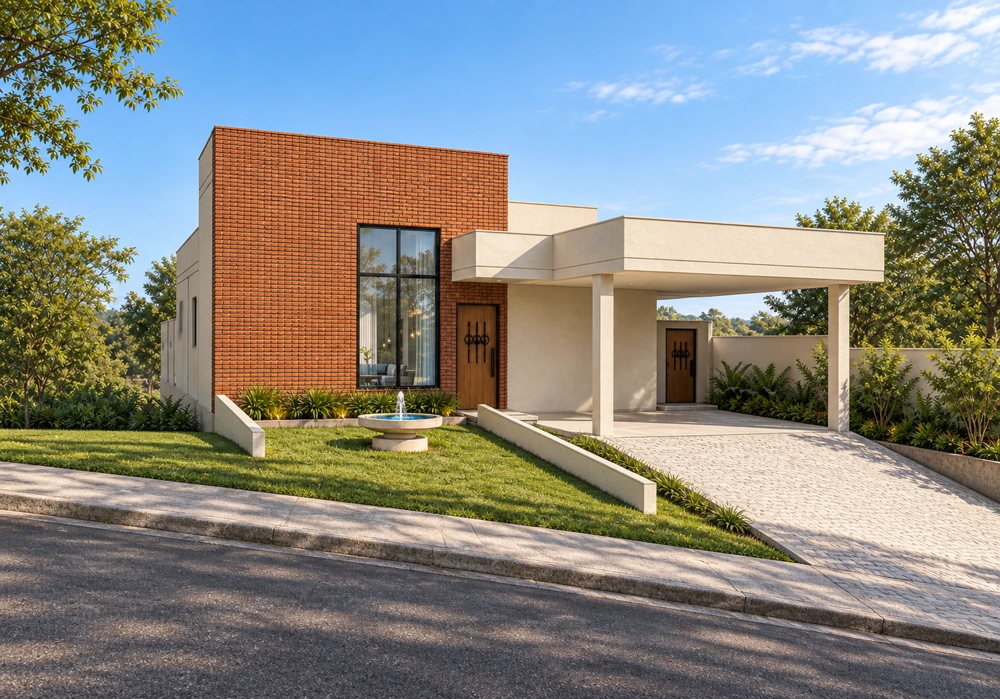
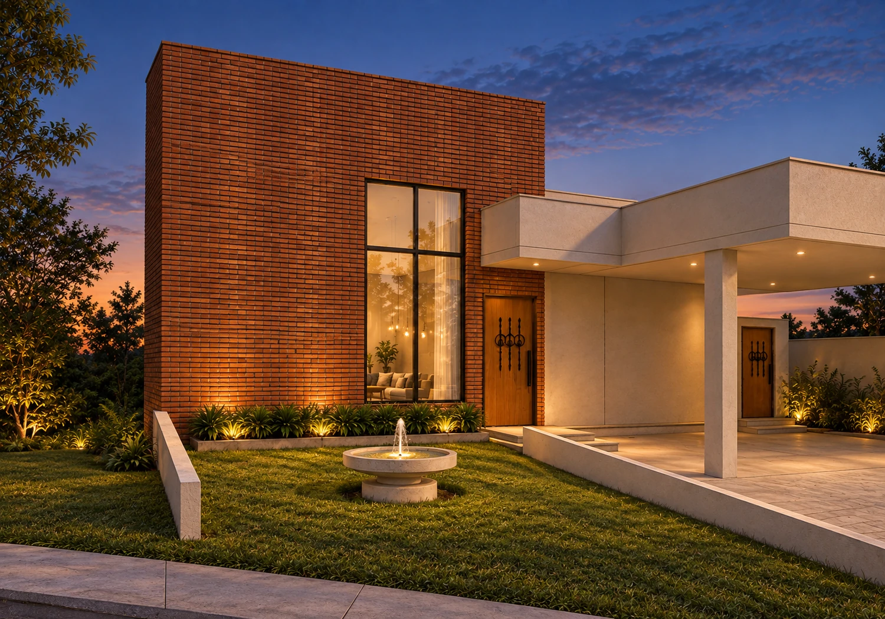
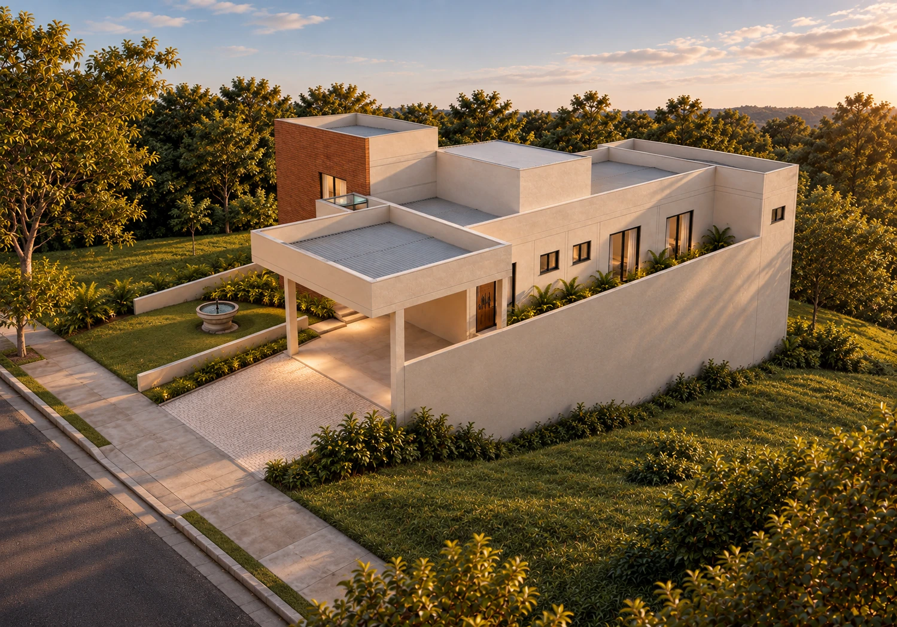

JARDIM CASABLANCA · INDAIATUBA
Casa AC20.
Formas contemporâneas.
Materiais que acolhem.

Tijolo, madeira
e luz natural.
O volume alto da sala recebe tijolinho terracota em toda a fachada. A janela vertical preserva a entrada de luz, enquanto madeira e ferro retorcido trazem o detalhe neocolonial às portas.
À frente, a fonte se aproxima do jardim. Muretas baixas acompanham suas laterais até a calçada e marcam o encontro com o acesso.

O jardim,
ao entardecer.
Uma casa nivelada.
Um terreno em queda.
A residência permanece em uma plataforma horizontal, fechada e aterrada. A queda natural do terreno aparece na lateral, onde o fechamento se torna mais alto em direção aos fundos.
A garagem fica 30 cm abaixo do hall e da casa. Dois desníveis de 15 cm fazem a transição; o lavabo recebe luz pelo domus na cobertura.

Imagens de estudo com acabamento por IA, produzidas a partir do modelo revisado.
Veja por
outro ângulo.
Explore a implantação, o desnível da garagem e a organização dos ambientes. Oculte a cobertura para olhar por dentro.
Explore a Casa AC20.
Modelo com as alterações de fachada, jardim e níveis. A geometria do terreno é uma interpretação do levantamento para visualização.
BAIXAR MODELO SKETCHUP ↗